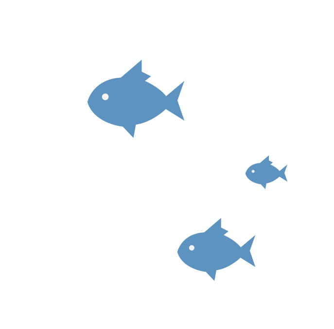

СНОРКЛИНГ В МАЛАЙЗИИ
Самым ярким и запоминающимся занятием для
туристов может стать снорклинг на островах небольшого парка Тунку Абдул Рахман, который расположен всего
в 30 минут езды (точнее сказать плытья) от Кота-Кинабалу. В состав этого национального парка входит пять
маленьких островов. Во многих путеводителях можно найти, что из всех парков штата – этот не самый лучший
выбор для снорклинга или дайвинга, так как ввиду очень большого наплыва посетителей, местные кораллы
умирают и здесь нельзя уже найти былое многообразие живности подводного мира.

На остров можно попасть только в
составе группы.Местные туристический компании предлагают два варианта:дорогой и бюджетный. Мы выбрали второй
способов, сторговавшись за 240 рингит на двоих. И ничуть не пожалели! Вас забирают у отеля на автобусе,
затем везут в Куах в порт. В порту кстати можно очень выгодно арендовать авто, если вы не сделали этого в
аэропорту. Дешевле чем в районе ченанг процентов на 20%. Из порта вы все отправляетесь к морскому парку.
Дорогой вариант: вас высаживают на платформе метрах в 20 от берега, тусуетесь на ней. Рыбы те же, что и у
берега, поэтому в снорклинге разницы нет. Может еда немного лучше. В бюджетном варианте вас высаживают на
берег, где вы плаваете в окружении красивых рыбок и маленьких рифовых акул. Трубки и маски выдают, но
качество оставляет желать лучшего. Неприятным стал момент, что в воде есть кусачая рыба. Причем очень кусая.
Больно. Очень больно. Выходишь на берег, а у тебя в кровище) Наш сопровождающий предложил мне пластырь, хотя
все местные в один голос утверждали что все окей! и это вам сувенир на память, в виде маленького шрамика)
Желание купаться после трех попыток отпало. Таких как я было человек 10. Обед скромный, но вполне съедобный.
половиной обеда кормили рыб. Снорклинг конечно скромнее чем в красном море, но если вы не плавали с
акулками, то поехать стоит! В целом впечатление от поездки положительное!
